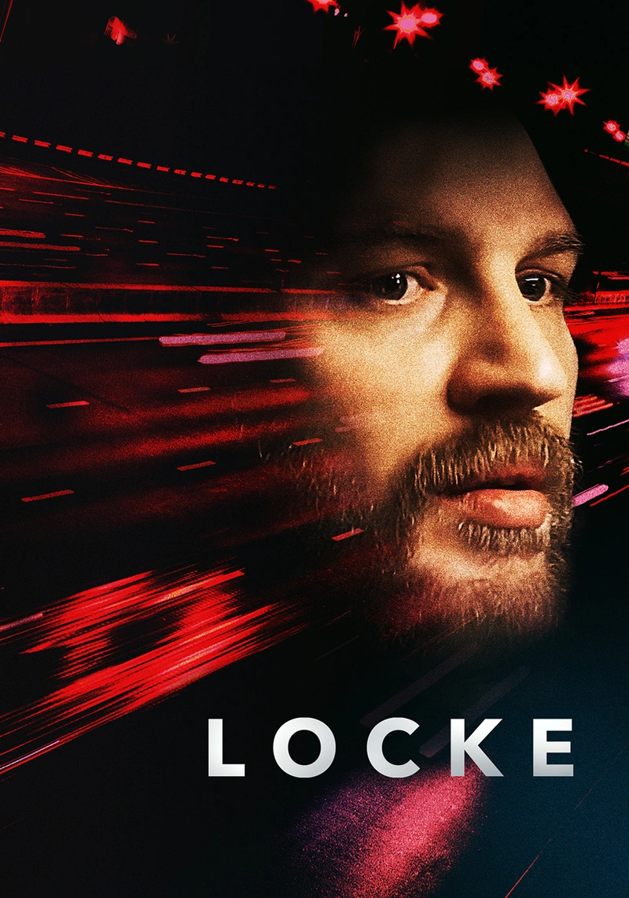

Locke es una clase magistral de escritura de guión. Con un solo actor y una sola escena, no muchos pensarian que pueda salir una gran película, pero esta es la prueba de que si.
La actuación de Tom Hardy y de los actores de voz es excepcional, ya que uno siente cada cosa que afronta el protagonista y los secundarios, incluso sin necesidad de verlos. Además, los desenfoques y movimientos de cámaras no hacen mas que resaltar el momento.
Tiene una calicación R, pero no me parece adecuada, ya que lo único que se menciona son malas palabras. Por último, dura poco, así que espero le des una oportunidad, no te arrepentirás.